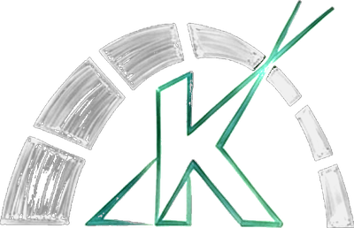
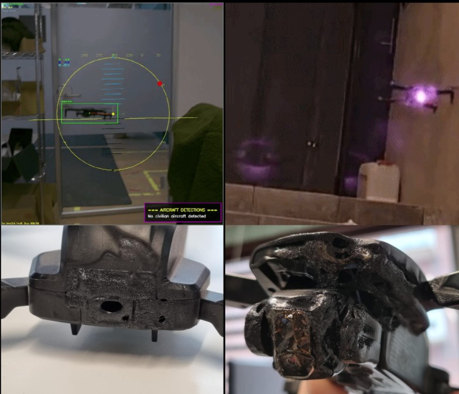
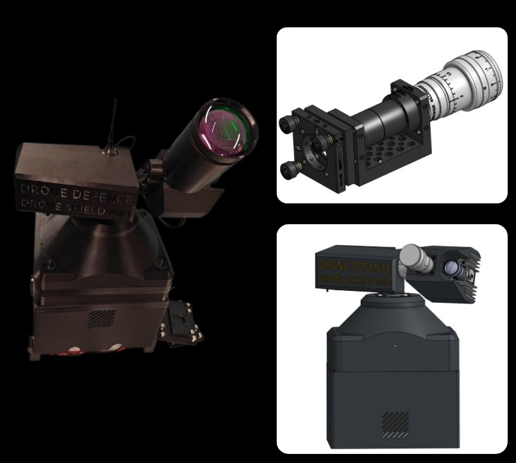
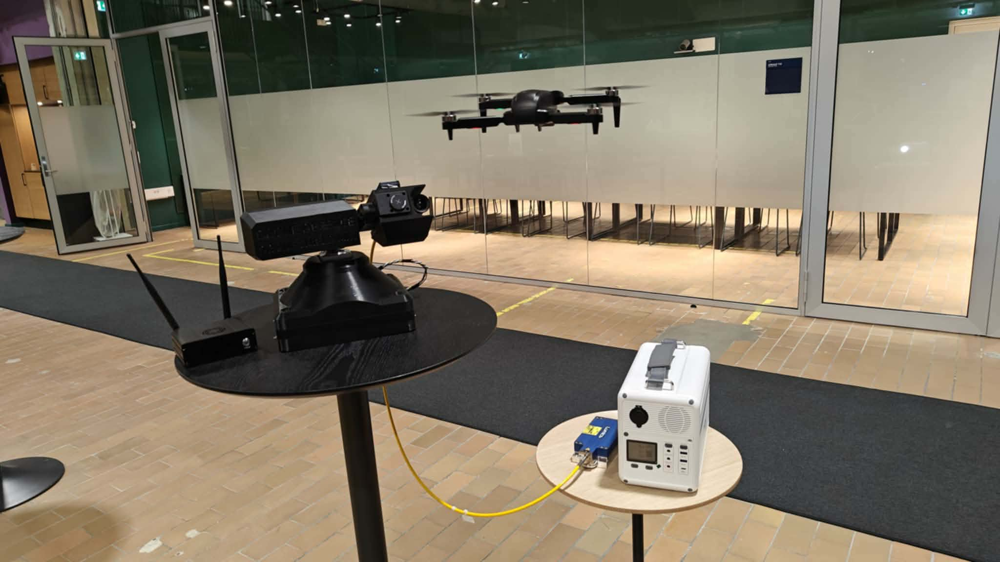

Emission is inhibited if ADS-B telemetry is lost, and stops within 100 ms of timeout.

Kinemarc Request a briefingThe product · Kinemarc
An autonomous laser counter-UAS effector.
No ammunition. No falling debris. Only light on target.
Four stages. Nothing fires without the last one agreeing to the first three.
Layered sensing rather than a single source. Multispectral EO/IR gives visual confirmation and feeds the vision pipeline; acoustic covers broken line-of-sight; radar provides the long-range cue.
A computer-vision pipeline running on NVIDIA Jetson produces the track lock, with latency-corrected prediction so the aim point leads the target rather than chasing it. Birds are a class of their own, and a bird never reaches the controller.
Rules of engagement sit between classification and emission. Positive hostile identification and an ADS-B cross-check must both pass. Anything correlated with manned aviation is a hard inhibit.
A two-axis anti-backlash turret holds the beam on a moving target while a Galilean expander shapes it, delivering energy density on target at range — no ammunition, no fragmentation, nothing to fall down.
The effector is deliberately decoupled from the detection layer. It integrates with the radar and RF sensors a site already runs, instead of forcing a full system replacement.
The V1 turret has detected, tracked and defeated flying drones under autonomous targeting on a 240 W source — including engagement of UAV targets outdoors under near-realistic conditions.

Everything beyond this list is stated as a target, not a result. Performance figures are held under configuration control as a formal requirement baseline, verified by test rather than asserted, and shared under NDA with qualified end users and integrators.
Six mandatory interlocks. Every one defaults to inhibit. None can be overridden in software.
Emission is inhibited if ADS-B telemetry is lost, and stops within 100 ms of timeout.
Cuts laser power independently of software and works with the control computer frozen. Per EN ISO 13850.
Emission inhibited outside the defined azimuth/elevation zone, enforced by soft limits and hard stops.
No emission against any ADS-B-correlated or unclassified track. Commercial and friendly aircraft are a hard inhibit.
The system never emits at or below human height. The elevation floor keeps the beam line of sight above 2 m at all ranges.
Absence of hostile confirmation defaults to inhibit. Silence is never permission.
Compliance is developed alongside the hardware, not after it: IEC/EN 60825-1 laser safety, dual-use classification under EU 2021/821, and export-control assessment are built into the programme plan. On the test rig the same discipline applies — a run that cannot calibrate is not allowed to start, and every run ends with a verified return to a known home position.
Live-fire testing against real drones is slow, weather-bound and expensive. So the turret flies thousands of engagements a week against a simulated sky — on the real hardware, in real time.
The background sky and terrain are rendered as a single high-resolution panorama with per-pixel depth. At runtime the turret's own measured pose selects the view, and the target is composited at its true angles — so it disappears behind a treeline exactly as it would in the field.
Time runs 1:1 and the turret physically moves itself. The recording shows the actual machine's jitter, lag and overshoot — not an idealised model of them. Detection runs on the synthetic sensor image; the control loop drives real hardware.
The rig exists to break the system safely: stalled sensors, lost serial bytes, blinding sun, uncalibrated starts. Every failure found on the bench becomes an interlock the field system cannot talk its way past.
The synthetic imagery is also the training set. A Blender-based pipeline generates labelled visible and thermal footage of drones and birds against varied terrain, weather and time of day; detectors trained on it are exported to the turret's onboard Jetson. The same simulation that trains the machine is the one that tests it.
Each iteration answered one question and exposed the next. Nothing on this line is a plan — it either happened, or it is marked as ahead of us.
Founded in Aarhus by four mechanical engineers around a single conviction: the economics of drone defence only close if the round is replaced by light. Awarded a mikrolegat by Fonden for Entreprenørskab in the same month.
A two-axis pan/tilt platform, an optical bench with a Galilean beam expander, and a camera-based tracker. Portable, battery-powered, built in-house. The first question it answered: can a self-built turret hold a lock on a hovering drone at all?

Detection and tracking closed the loop without an operator, with latency-corrected prediction so the aim point leads the target. The first safety gate went in at the same time: an ADS-B cross-check that inhibits emission on anything correlated with manned aviation. Autonomy and refusal-to-fire were built together, not in that order.

The V1 source engaged UAV targets outdoors under near-realistic conditions and defeated them under autonomous targeting: acquisition, ADS-B clearance, lock, burn-through. This is the demonstration the whole programme is built on.
See the engagement sequence ↑Selected through CenSec Challenges round 2, in a process co-judged with the Danish Defence Innovation Unit and Forsvarskommandoen. The award turned a prototype into a programme: 30 requirements under configuration control, ten milestones, two formal demonstrations, and Aarhus University MPE as research partner.
Programme start 1 Aug 2026Kick-off with DDIU and Forsvarskommandoen on 17 August set the requirement baseline and the demonstration schedule. Days later the turret ran at DALO Industry Days, where the conversations that matter for a defence product actually start — platform integrators, procurement, end users.
Real counter-drone imagery is scarce, and the awkward cases — a bird at range, a drone against a treeline, a thermal signature at dusk — are scarcest of all. So we build them: a rendering pipeline that produces labelled visible and thermal footage by the thousand, with the sensor's own noise and blur modelled on the cameras we actually fly.
The turret now flies full engagements against that synthetic sky on real motors, in real time, with every run starting from a verified calibration and ending at a verified home position. It has already found faults no desk review would have: a stalled sensor that makes a moving turret look stationary, a sign convention that steered away from the target, a serial protocol that silently drops commands. Each one is now an interlock.
Watch the rig run ↑Integration of the 3 kW source and a beam expander re-sized for its optical path; a validated structural-dynamic model with Aarhus University; formalised rules of engagement and fail-safe logic; latency optimisation; and a drive train that can follow a fast crossing target rather than merely see it. Two formal demonstrations, the second at an end user. Exit criterion: TRL 7 against the acceptance baseline.
AUTOSHIELD M1–M10The optical chain and control architecture are designed to scale toward a 10 kW effector — the class platform integrators are asking for. The long-term shape of the product is not a tower we sell alone, but an effector that drops into the gimbals, vehicles and sites our customers already operate.
Each step is tied to a demonstration rather than a projection.
Full detect-to-engage chain proven outdoors against flying targets. Autonomous targeting, ADS-B gating, closed-loop tracking on real hardware.
Source integration, validated structural-dynamic model, formalised ROE and fail-safe logic, latency optimisation, and an operational demonstration at an end user. Exit criterion is TRL 7.
The optical chain and control architecture are designed to scale toward a 10 kW effector — the class integrators are asking for on high-precision platforms.
Mathias and Thue on the problem, the system, what the rig has shown, and what comes next. Danish, 2:29.
BeamSentry is being matured inside a funded national defence-innovation programme, not in isolation.
AUTOSHIELD — an autonomous C-UAS engagement system for manpower-saving protection of critical infrastructure and tactical units — was awarded through CenSec Challenges in June 2026, in a process co-judged with the Danish Defence Innovation Unit (DDIU) and Forsvarskommandoen.
The project runs from August 2026 to January 2027 as a two-partner consortium: Kinemarc (Drone Defence ApS) as project lead, and Aarhus University, Department of Mechanical and Production Engineering as research partner — contributing multibody dynamics modelling, vibration and stability analysis, and scientific verification and validation.
It carries two formal demonstrations and ten milestones, each with a named deliverable and a date.
AUTOSHIELD is administered by CenSec with funding from Virksomhedsudvikling Danmark, as part of CenSec's national cluster grant 2025–2028.
We brief qualified end users, integrators and defence stakeholders on current capability, the requirement baseline and the demonstration schedule.
contact@kinemarc.com